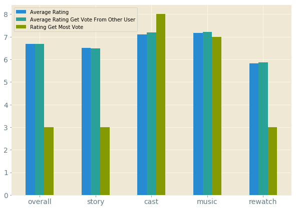
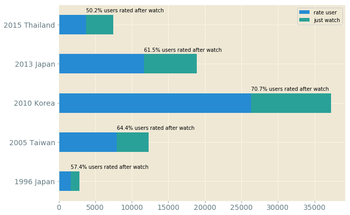

Data Summarise
'Playful Kiss(2010) Rating Details
'Playful Kiss(2010)' gets the highest rating in 'cast' category, while its 'rewatch' value is the losest in the 5 rating categories.
Also, it seems that this view is voted by other users on MyDramaList
Average Rating between Different Versions
Compared with other versions in Asia, Korean Drama 'Playful Kiss'(known as '2010 KR' in chart below) is not the most sucessful one in Asia. With average rating 7.4 from MyDramaList site, it is far behide 2015 TH, 2013 JP, even 2005 TW, which is released 5 years earlier than it.
Wathcers Feedback Rate between Different Versions
However, 2010 KR is watched by most users on MyDramaList compared with other 4, and the percentage of rating is also higher than the rest.
Summary
'Playful Kiss(2010)' is a widely wathced and well-known Korean drama but is not liked by watchers.
The reason might be: it has great cast to attrack people to watch, however, it turns out disappointing after watching due to poor adaptation and plot.